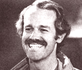

Newsworthies
James M. Jeffords, founder of the Congressional Solar Coalition, activist, advocate of energy solutions and an environmentalist; Mike Farrell, is a committed vegetarian, speaks out against the dangers of chemical additives in food, etc; Pam Dawber, concerned with the country's energy crisis. E.F Schumacher, book - Good Work, based on a series of lectures in the mid 1970's; Marcel Marceau, he purchased a farm and has planted lots of trees, believes that land must be renewed and nurtured each generation.
By the Mother Earth News editors
September/October 1979
Issue # 59 - September/October 1979
JAMES M. JEFFORDS
Jim Jeffords, the activist Republican Congressman-at-Large from Vermont, is deeply involved in environmental issues. A founder of the 75-member Congressional Solar Coalition (the group's first meetings took place in his office), Jeffords continually stresses the use of alternative energy sources. A bill filed by the congressman this spring, for example, would mandate that gasoline be mixed with alcohol, to "reduce dependence on oil, rather than just increase fuel production".
Another Jeffords bill would aid small hydro plants by turning licensing-which is now handled by the federal government and is the most serious hydro-development bottleneck-over to the often-more-efficient states . . . and by making federal loan funds available for small hydro systems. The congressman advocates a tax credit for wood stove purchasers, too. Perhaps partially because he represents a state in which 70% of the homes have wood heaters and 27%r of all heating oil consumption has been replaced by wood, Jeffords criticizes "the Administration's policy which seeks big solutions, and ignores completely the ingenuity and ability of individuals to find our own solutions".
Vermont's congressman has not limited his attention to energy, however: In 1978 he attended the Canadian seal "harvest" (as a representative of both Congress and Greenpeace) and-in June 1979-the American seal slaughter in the Pribiloff Islands. While admitting that there may be economic-or even ecological-arguments in favor of killing the seals . . . Jeffords poignantly says, "No one can come away from the destruction of pups still in the process of nursing from their mothers without feeling a sense of general shame." As chairman of the House Environmental Study Conference, Jeffords this year introduced bills which would require the federal government.
[1] to determine whether the harvest of seals threatens the continued existence of the species (and to take action to assure the survival of the mammals), and [2] to play a leading role in seeking an international moratorium on the commercial killing of whales.
As both an advocate of human-scale energy solutions and an environmentalist, Jeffords serves his constituents-and the nation-well. PH.
MIKE FARRELL
M*A*S*H has always been a different sort of television show . . . less simplistic and more involved with human values than are the run-of-the-mill comedy programs. It's not surprising, then, that many members of the cast exhibit concern about the very issues dramatized in the series . . . and there's no better example than Mike Farrell, who plays Dr. B.J. Hunnicutt.
Farrell's activities are a refreshing contrast to the too-frequent disco-dumbness of celebrity life. He's a committed vegetarian, for example, who frequently speaks out about the dangers of chemical additives in food. Something of an activist, Mike numbers human rights, the campaign for the ERA, prison reform, the protection of endangered species, and improving the plight of the farmworkers among the causes he's advocated.
Mike Farrell wears fame lightly . . . but the actor puts his "instant recognition factor" to work in behalf of his principles.-PH.
PAM DAWBER
Television's Pam Dawber-co-star of the hit comedy series Mork and Manly-is not just "another pretty face". The young actress has a quick mind as well . . . and a commitment to causes she considers important. Like Mike Farrell, Pam realizes that her fame guarantees that people will stop to look . . . and perhaps remain to listen.
Dawber is particularly concerned with the country's energy crisis, and she recently spoke-before a California audience of 18,000-in support of the Golden State's solar bank bill. The Detroit native hopes that if she can encourage folks to consider the energy situation-and then begin to look at alternatives such as solar power-she will have made a responsible use of her popularity.-PH.
E.F.SCHUMACHER
E.F. Schumacher is no longer with us, but his profound critique of our society continues to be debated. Schumacher's last book, Good Work-recently published by Harper & Row-will contribute to the discussion. Based on a series of lectures delivered in America during the mid1970's, the volume is an exploration of the consequences-political, economic, and social-of conventional technology and of the alternative systems that are beginning to appear.
Schumacher was an important and an original thinker, and his last book is one to be read and pondered. Copies are available from any good bookstore, or-for $9.95 plus $1.00 shipping and handling-from Harper & Row, 10 East 53rd St., New York, N.Y. 10022.-PH.
MARCEL MARCEAU
Marcel Marceau, whose name is almost synonymous with the silent art of pantomime, maintains a schedule of teaching, one-man shows, workshops, and films, that ought to leave him too breathless for words. Yet the French mime master is-offstage-a nonstop talker about a wealth of lively interests: chess, music, his oil painting . . . and his seven-acre country home 50 miles west of Paris.
Marceau's multiple activities don't allow much time for being a country gentleman. Yet he knows that-like his ancient, wordless art-the land must be renewed and nurtured each generation.
"When I bought the 250-year-old farmhouse," says Marcel, "there were only four trees on the property. I have planted more than 2,500, and created . . . a forest! To me, trees are the symbols of life."-PF.
 |
 |
|